A high basin under a very dark sky
The lights are seen over Mitchell Flat, a grassland basin about 1,400–1,500 m up, between Marfa, Paisano Pass and the Chinati Mountains. The geography explains a lot about what you can and can't see from the Viewing Area.
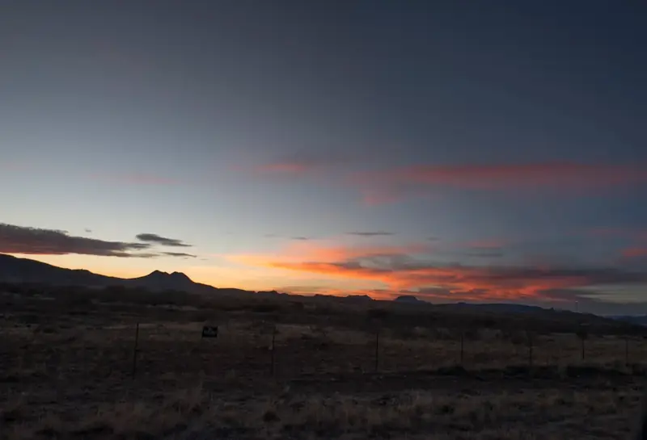
Geography
Marfa sits at about 4,700 ft and is the seat of Presidio County. It was founded in the early 1880s as a railroad water stop and named after a character in a Jules Verne novel. The 2020 census counted 1,788 residents.1 The Viewing Area is on US-90 about nine miles east of town. It looks south and southwest across the flat toward US-67, the road that drops from Marfa to Shafter and the border at Presidio.
From the platform the horizon is not flat. Folds of the basin, mostly close to the road itself, hide about 54 of the 64 km of US-67 between Shafter and Marfa, and the Chinati Mountains form the far skyline 60–70 km away. Chinati Peak, at 7,728 ft (2,355 m), is the highest point in Presidio County. It is the tallest peak on the skyline as seen from the Viewing Area.2 You can fly over this ground, creeks and all, on the 3D terrain page.
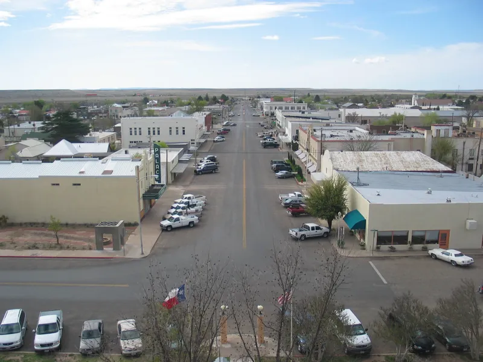

Geology
The Chinati Mountains are the eroded remains of a volcanic caldera complex, the largest in the Trans-Pecos volcanic field. The Chinati Mountain caldera erupted about 32–31 million years ago and laid down the Mitchell Mesa Tuff. An older caldera, the Infiernito, formed about 37 million years ago.3,4 Silver ore in these rocks supported the mining town of Shafter, which today has only a few families.5
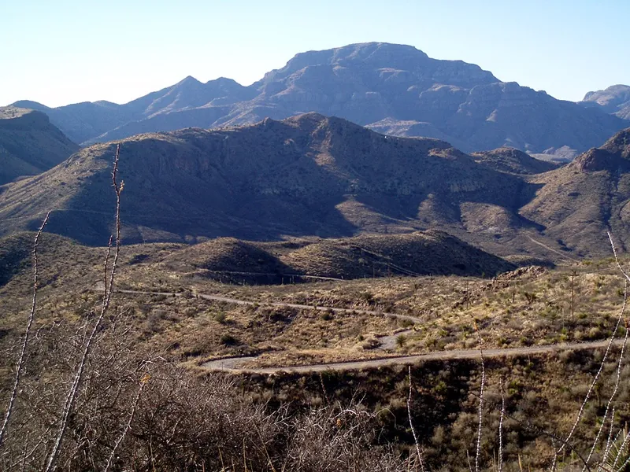

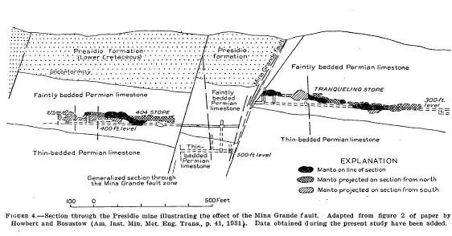

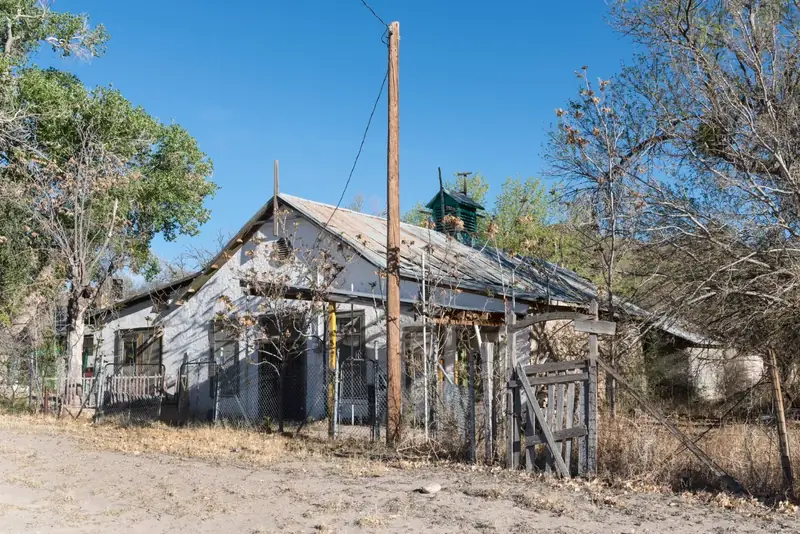
Climate
Marfa has a semi-arid steppe climate: hot summers, cool winters, about 15.4 inches of rain a year and a little snow. The mean daily maximum is 76.5 °F and the minimum 42.8 °F (Western Regional Climate Center).1 A difference that large between day and night is typical of high, dry, clear places. On calm, clear nights it produces a cold layer of air at the ground under warmer air above. That is the temperature inversion that bends light and lets distant lights appear higher and distorted.
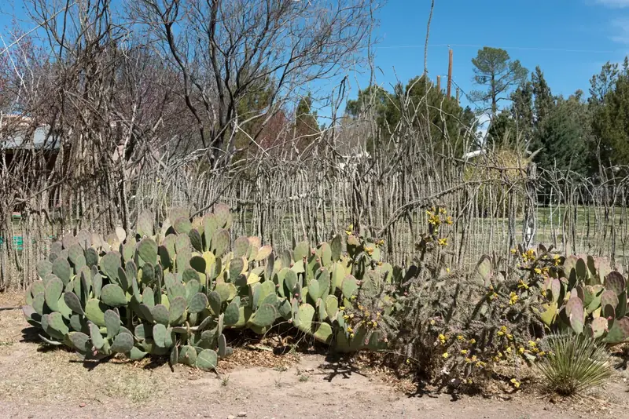
Grassland and wildlife
Mitchell Flat is high desert grassland, not sand: bunchgrass with scattered shrubs, yucca and cactus, most of it in large private cattle ranches. Pronghorn and javelinas live on it. Pronghorn once numbered at least 17,000 in West Texas but had fallen below 3,000 by 2012; since 2011 Texas Parks and Wildlife has moved about 780 animals from the Panhandle to restore the herds around Marfa and Marathon.8 The ranches matter to observers: their houses, yard lights and private roads are not in this project's catalogue of light sources, so a light on the flat that matches no public road or tower may still be a rancher.
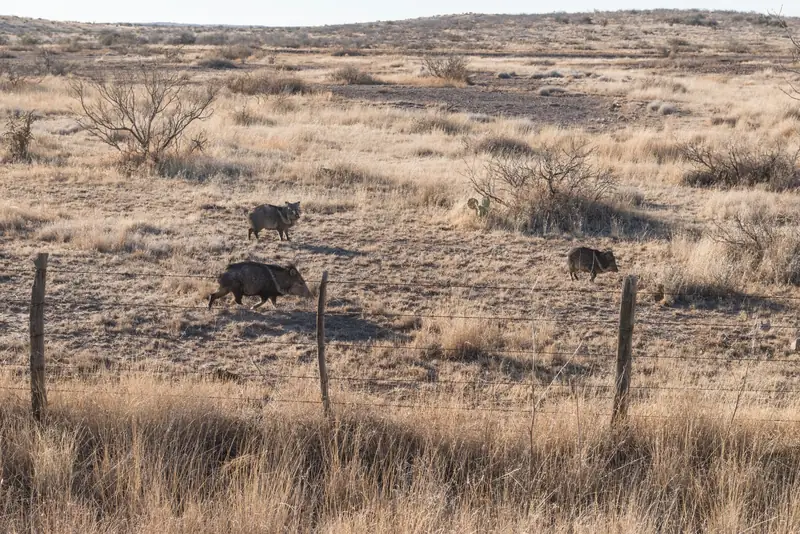
Dark skies
In April 2022 the Greater Big Bend region became an International Dark Sky Reserve, the first to cross an international border. It covers more than 38,850 km², spanning Brewster, Jeff Davis, Presidio and Reeves counties and protected lands in Mexico. Its core areas are the University of Texas McDonald Observatory, in operation since 1939, and the Nature Conservancy's Davis Mountains Preserve.6 Dark skies make faint distant lights visible from far away. The same darkness that shows the Milky Way lets a single headlight 30 km away stand out, so every ordinary light has to be accounted for. More on the reserve and good lighting is on the Community page.
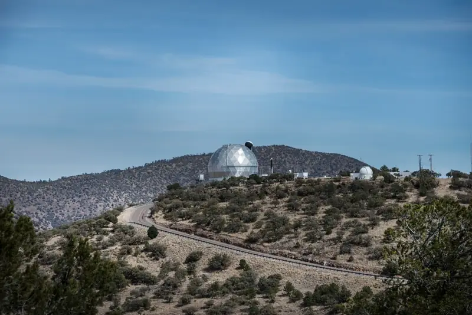
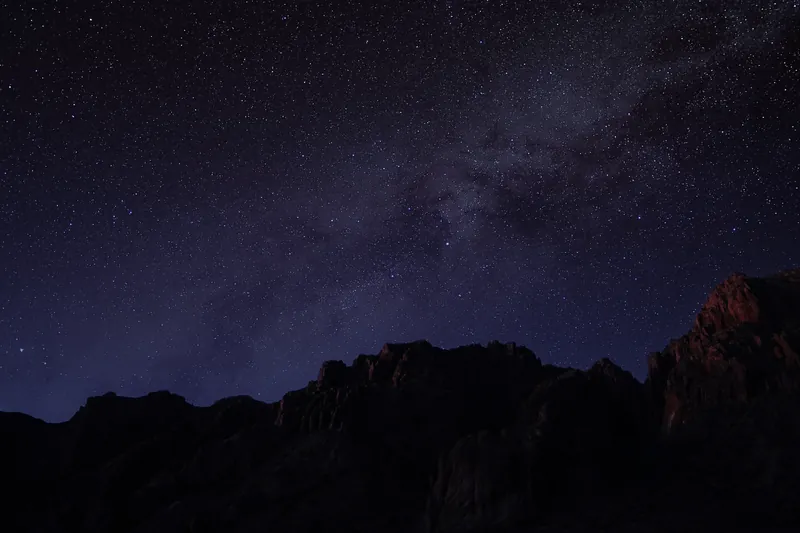
The border and the roads
Marfa's roads grew out of the border. When the Mexican Revolution reached the Rio Grande, the U.S. Army came: cavalry arrived in Marfa by train in January 1911 to stop guns crossing the river, and their camp became Fort D. A. Russell, which closed in 1946. The Chinati Foundation now occupies its grounds.9 In January 1914 Pancho Villa's forces took Ojinaga, across the river from Presidio. About 6,000 Mexican soldiers and civilians crossed into Texas, surrendered, and were marched 67 miles to the railhead at Marfa in bitter weather, then taken by train to a camp at Fort Bliss.10 They walked roughly the route of today's US-67. By 1918 the Army was hauling supplies by tractor train through Pinto Canyon, in the mountains west of Marfa, in what it called the Big Bend District.
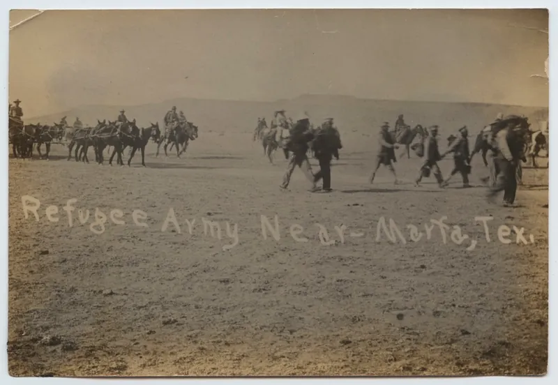
.jpg){kind=link}
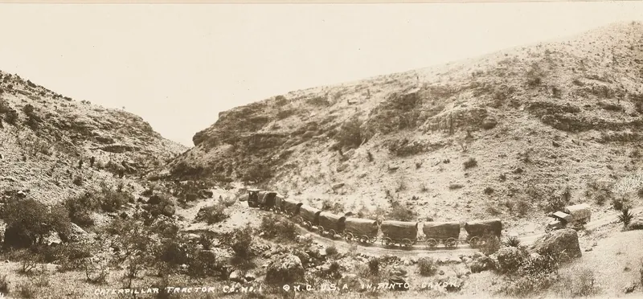

The air base on the flat
From 1942 to late 1945, Marfa Army Air Field trained pilots to move from single-engine to multi-engine aircraft. The main field covered 2,750 acres, with four auxiliary fields of another 1,809 acres. It trained hundreds of cadets a month on AT-17s, B-25s and transports.7 The Viewing Area sits beside the old main field. The auxiliary fields are shown on the map as historic sites. They are closed and unlit today.
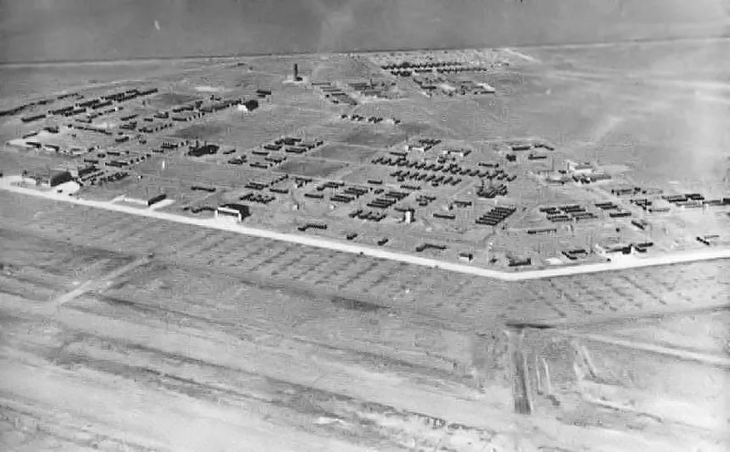

Art and film
Marfa is also known far beyond Texas as an art town. Minimalist artist Donald Judd arrived in 1973. The Chinati Foundation he founded now occupies more than 30 buildings, with work by 13 artists. The 1956 Warner Bros. film Giant was shot here.1 The Hotel Paisano, designed by the El Paso firm of Trost and Trost and opened in 1930, was the headquarters of the film's cast and crew for six weeks in the summer of 1955.11
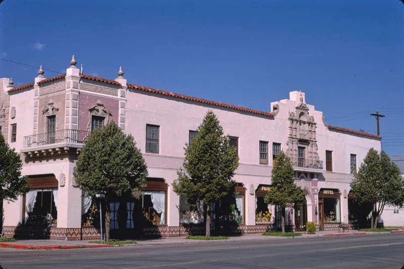
Sources
- “Marfa, Texas,” Wikipedia, citing the 2020 U.S. Census and Western Regional Climate Center normals. en.wikipedia.org
- “Chinati Mountains,” Wikipedia. en.wikipedia.org
- “Chinati Mountain Caldera Complex,” Wikipedia. en.wikipedia.org
- “Oligocene Volcanism and Multiple Caldera Formation in the Chinati Mountains, Presidio County, Texas,” Bureau of Economic Geology, The University of Texas at Austin. beg.utexas.edu
- “Shafter, Texas,” Wikipedia. en.wikipedia.org
- “World's Newest International Dark Sky Reserve Spans U.S./Mexico International Border,” DarkSky International, April 2022. darksky.org
- Lee Bennett, “Marfa Army Air Field,” Handbook of Texas Online, Texas State Historical Association. tshaonline.org
- “Trans-Pecos Pronghorn Restoration,” Texas Parks and Wildlife Department news release, 28 February 2018. tpwd.texas.gov
- Lonn Taylor, “Fort D. A. Russell, Marfa,” Chinati Foundation. chinati.org
- “Mexican War Refugee Camp” historical marker, El Paso, Texas, via the Historical Marker Database. hmdb.org
- “El Paisano Hotel” Texas historical marker, Marfa, via the Historical Marker Database. hmdb.org
- Elevations and bearings: this project's analysis of USGS 3DEP data. GitHub